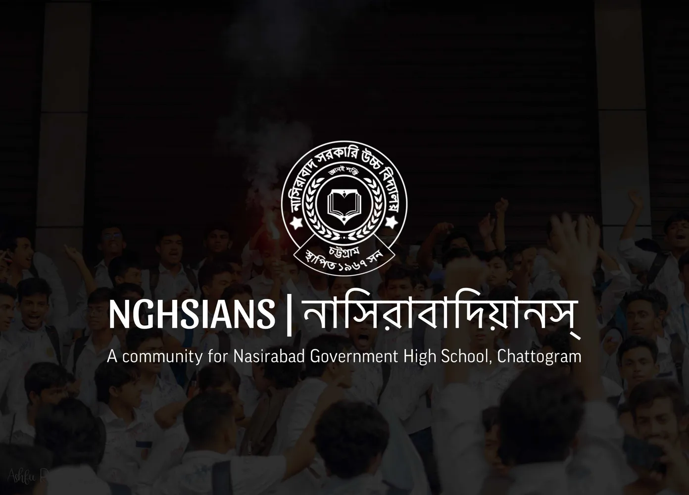

← All newsসব খবর

SSC Batch 2026 results: browse the student archive
এসএসসি ব্যাচ ২০২৬-এর ফলাফল: শিক্ষার্থী তালিকা দেখুন
The NGHSIANS results archive lists 242 SSC Batch 2026 students and their Chattogram Board ranks in a searchable page.
NGHSIANS-এর ফলাফল সংরক্ষণাগারে এসএসসি ব্যাচ ২০২৬-এর ২৪২ জন শিক্ষার্থী ও চট্টগ্রাম বোর্ডে তাদের অবস্থানের অনুসন্ধানযোগ্য তালিকা রয়েছে।
A searchable batch archive
The SSC Batch 2026 results page brings together 242 listed students and their Chattogram Board ranks. Visitors can search the archive to find a student record and explore the batch list. The original announcement does not specify a publication date, so this archive story does not assign one.
Open the complete results
Use the results archive to view the complete Batch 2026 list. Individual records and ranks are presented on the dedicated results page.
অনুসন্ধানযোগ্য ব্যাচ সংরক্ষণাগার
এসএসসি ব্যাচ ২০২৬-এর ফলাফল পাতায় ২৪২ জন শিক্ষার্থীর তালিকা ও চট্টগ্রাম বোর্ডে তাঁদের অবস্থান একসঙ্গে রাখা হয়েছে। তালিকা থেকে শিক্ষার্থীর তথ্য খুঁজে দেখা যায়। মূল ঘোষণায় প্রকাশের তারিখ উল্লেখ নেই, তাই এই প্রতিবেদনে কোনো তারিখ অনুমান করে যোগ করা হয়নি।
সম্পূর্ণ ফলাফল দেখুন
ব্যাচ ২০২৬-এর সম্পূর্ণ তালিকা দেখতে ফলাফল সংরক্ষণাগার খুলুন। শিক্ষার্থীদের তথ্য ও অবস্থান নির্দিষ্ট ফলাফল পাতায় দেওয়া আছে।